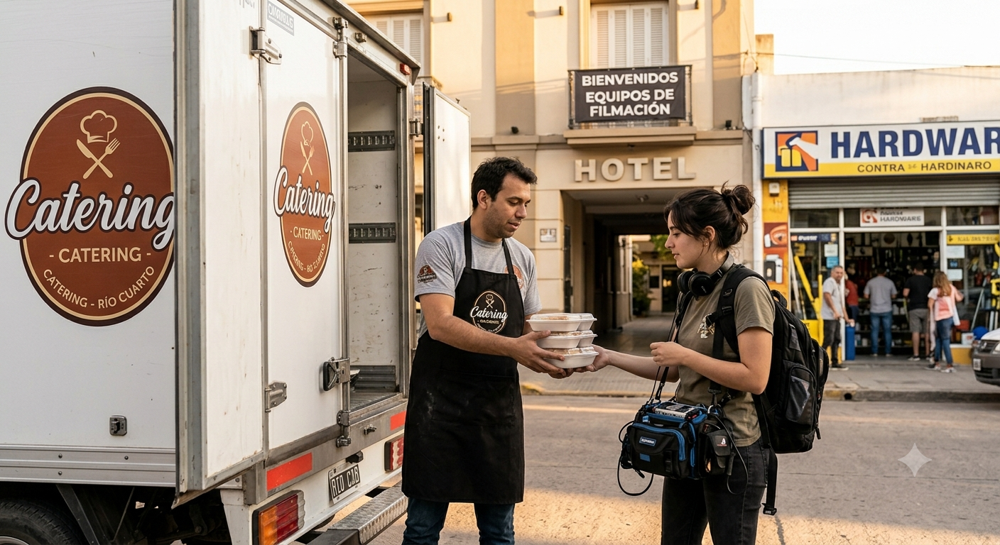
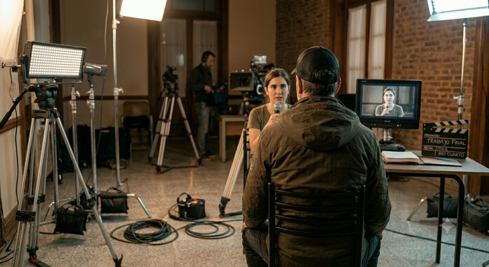
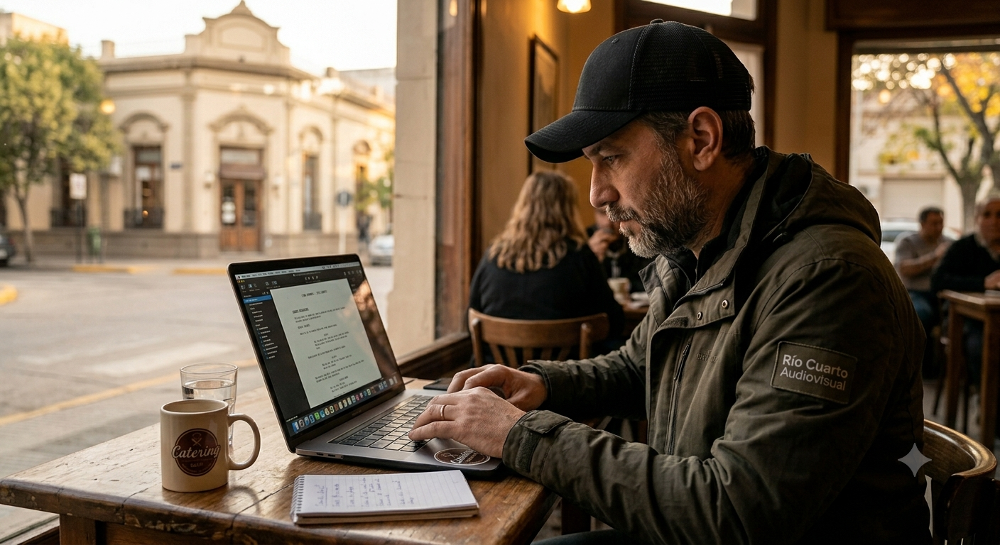

Cuando pensamos en Río Cuarto, lo primero que se nos viene a la mente es el campo, el comercio y su rol como el gran motor del sur cordobés. Sin embargo, en los últimos años, una nueva cosecha empezó a brotar en las calles de la ciudad: las industrias creativas. Lo que antes nacía como un esfuerzo vocacional y aislado, hoy puede consolidarse como una auténtica mini industria audiovisual.
Este sitio web es un recorrido crítico y multimedia por ese ecosistema en pleno crecimiento. No nos quedamos solo en la pantalla; nos metemos detrás de escena para analizar el impacto económico real que genera un rodaje en la economía local, el rol clave de las políticas de fomento provinciales y nacionales, y cómo el cine se convierte en una herramienta de comunicación estratégica para visibilizar las problemáticas de nuestra propia comunidad.
Te invitamos a descubrir cómo Río Cuarto puede aprender a filmarse, a contarse con su propia tonada y a demostrar que el cine, además de cultura, es trabajo genuino.
Un análisis del impacto económico regional, las experiencias de nuestros profesionales y las estrategias para visibilizar nuestra realidad sociocultural

A través de leyes de fomento, la industria puede encender la economía regional y consolidarse como un rubro genuino de trabajo.
Ir
Marcos Altamirano, profesor en la Carrera de Diseño, Producción y Realización Audiovisual, nos cuenta sobre las dinámicas en esta industria.
Ir
En Río Cuarto, el sector audiovisual utiliza tres estrategias de comunicación principales para romper la burbuja y llegar a los vecinos.
Ir